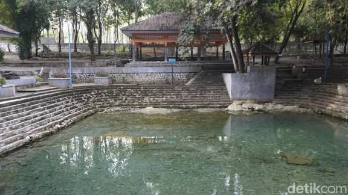
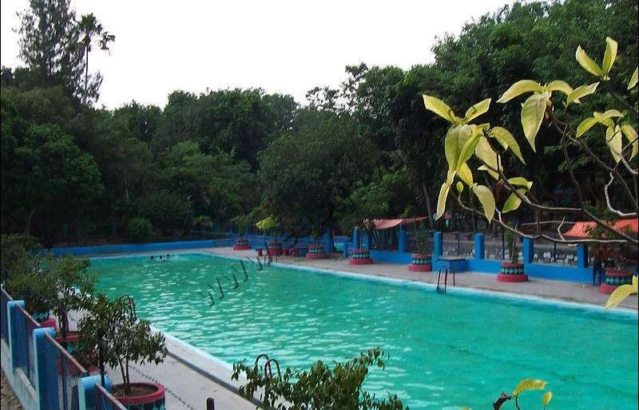
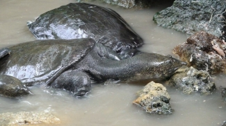
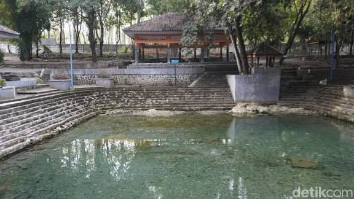
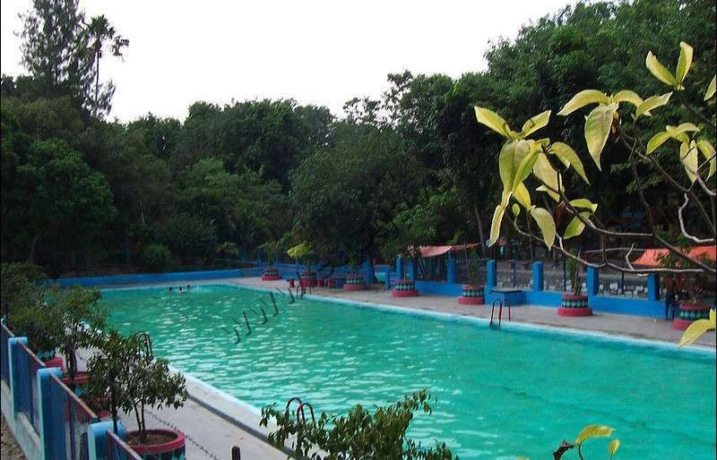
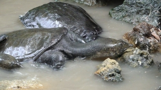

Profil Desa
Desa Tawun adalah desa di Kecamatan Kasreman, Kabupaten Ngawi, Jawa Timur, yang terkenal dengan Taman Wisata Tawun yang memiliki Sendang Bulus dan legenda Ki Ageng Tawun dan Raden Lodrojoyo. Desa ini memiliki kekayaan budaya, termasuk Ritual Keduk Beji dan Pasar Jadoel Ahad Legi, serta merupakan bagian dari program 200 Desa Budaya Nasional.
Kepala Desa
Sumbodo Hadi Purnomo S.Sos
Berita Desa
Keduk Beji
Upacara tahunan di desa tawun ngawi,jawa timur, untuk membersihkan dan menjaga kelestarian mata air sakral (Sendang) yang di anggap sumber kehidupan masyarakat.
Pasar jadul
Tradisi "Pasar Jadul Tawun" adalah pasar tradisional bernuansa tempo dulu yang diadakan setiap hari Ahad Legi (sekitar 35 hari sekali) di Taman Wisata Umbul Tawun, Ngawi. Pasar ini bertujuan melestarikan budaya dan menumbuhkan ekonomi lokal dengan menawarkan makanan tradisional, kerajinan tangan, dan hiburan rakyat.
Gotong Royong Desa
Warga bersama membersihkan lingkungan setiap hari Minggu.
Alamat Desa
Alamat: Jl. Raya Pemandian Tawun ,Desa Tawun,Kec.Kasreman,Kab.Ngawi
 




